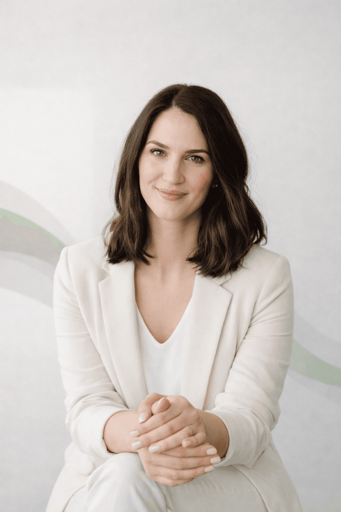
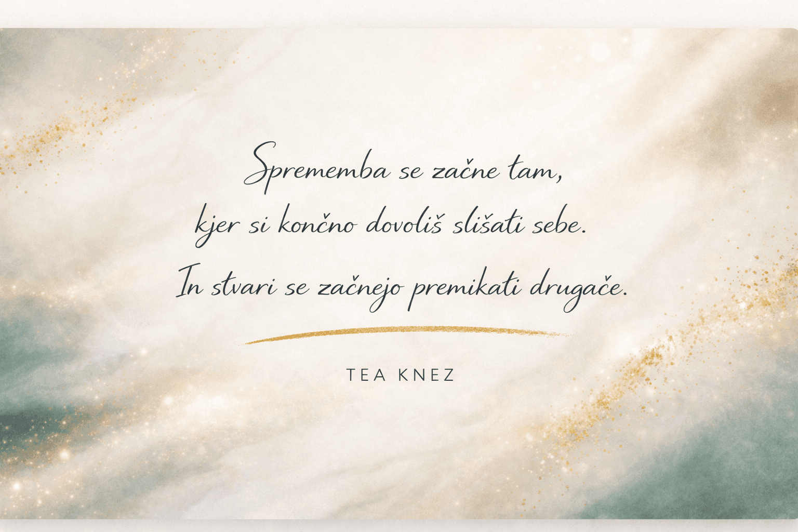

»Vodenje lastnega podjetja je hitro postalo preveč razpršeno. S Teo sem začela razmišljati širše in z več jasnosti sprejemati podjetniške odločitve.«Saraustanoviteljica marketing studia
Notranja jasnost.
Zrele odločitve.
Trajne spremembe.
Pomagam ti umiriti notranji hrup, razjasniti prioritete in sprejemati odločitve, ki so skladne s tem, kdo si.
Piši mi!
Mogoče
Mogoče si tukaj, ker…
- stojiš pred pomembno odločitvijo in želiš več jasnosti
- čutiš, da zmoreš več, a nekaj ostaja neizrečeno
- si v prehodu in iščeš smer, ki je res skladna s tabo
- želiš več miru, samozavesti in notranje stabilnosti
- navzven deluješ samozavestno, znotraj pa iščeš ravnovesje

Kaj je coaching
Coaching ni svetovanje in ni terapija. Je strukturiran, zaupen proces, ki te podpira pri bolj jasnem in zavestnem razmišljanju. Namesto da iščeš odgovore zunaj, začneš razumevati sebe, svoje vzorce in svoje odločitve.
Postopoma oblikuješ korake, ki so res v skladu s tabo.
Coaching ne daje rešitev. Ustvari prostor, kjer lahko odgovore odkriješ sam.
Kaj se spremeni?
Kaj se spremeni?
Sčasoma opaziš, da:
- odločitve sprejemaš bolj mirno in z manj notranjega hrupa.
- jasneje komuniciraš svoje meje in pričakovanja.
- prevzemaš odgovornost brez pretiranega pritiska.
- deluješ bolj skladno s tem, kar ti je zares pomembno.
- gradiš stabilnost, ki ni odvisna od zunanjih okoliščin.
In kar je najpomembneje: imaš več jasnosti, kako naprej - na način, ki je tvoj.
Moj pristop
Coaching z globino in strukturo
Ne ponujam hitrih rešitev. Delava sistemično - raziskujeva širšo sliko, odnose, dinamike in nezavedne vzorce. Hkrati ostajava zelo konkretna: cilji so jasni, koraki izvedljivi, napredek merljiv.
So-ustvarjanje, ne svetovanje
Ne dajem nasvetov. Postavljam vprašanja, ki odpirajo perspektivo. Izzivam s spoštovanjem. Podprem te, da sam/a prideš do odločitev, ki so skladne s tvojo identiteto, vrednotami in vlogo, ki jo živiš.
Toplina, jasnost in pogum
Moj stil je neposreden, a empatičen. Ustvarjam prostor zaupanja, kjer lahko razmišljaš na glas, preizkušaš ideje in krepiš notranjo stabilnost. Ko je potrebno, odprem tudi zahtevne teme - z občutkom in jasnostjo.
Zaupanje strank
Kaj pravijo stranke
Vsak pogovor prinese drugačno zgodbo - od večje jasnosti in samozavesti, do konkretnih premikov v življenju.
»Kot vodja ekipe sem bila pogosto ujeta med rezultate in ljudi. S coachingom sem postala mirnejša v zahtevnih situacijah in jasnejša v komunikaciji.«Petravodja ekipe v bančnem sektorju
»V poslu sem dolgo dvomil vase, čeprav sem bil strokovno samozavesten. Coaching mi je dal strateško jasnost in pogum za pomembne odločitve.«Lukaosebni trener
»Navajena sem biti ves čas ‘vidna’, redko pa sem si dovolila prostor za razmislek. Naučila sem se postaviti jasnejše meje in začela ustvarjati z več notranjega miru.«Majainfluencerka
Blog
Prostor za refleksijo
Praktični vpogledi in misli, ki ti pomagajo graditi jasnost, notranjo moč in osebno rast.
Preberi več